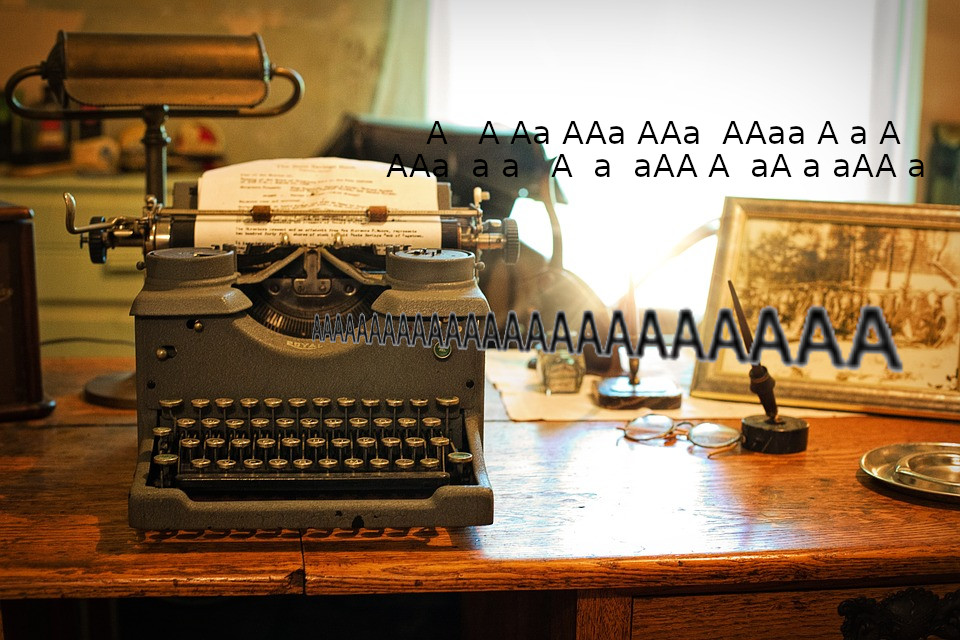

Les bO tutos

Ne vous inquièté pas, aucune Jeep n'a été maltraitée durant cet article
Rédigé le 15/01/2021
Pour commencer, sachez que la marque et le modèle du véhicule ont finalement que peu d'importance, sa couleur peu en avoir par contre (suivant la méthode que l'on utilisera)
1. Approche informatique
Commentaires
Comments 3
Liberée, délivrée, en Jeep je m'en irai.
AxxA
Ce tutoriel est le resultat d'heures d'ennui il y a quelques années, je tennais à faire partager cette avancée majeure.
D'autres articles:
-
 Capture vidéo sous Linux
Capture vidéo sous Linux
-
 Lecture multimédia depuis le terminal
Lecture multimédia depuis le terminal
-  Écriture en boucle
-
 Écriture en boucle
Écriture en boucle